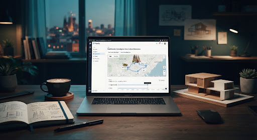

Acerca de Planify
Plataforma Inteligente de Planificación de Viajes
El Fin de la Dispersión en la Planificación
Organizar una travesía compleja tradicionalmente demanda alternar entre decenas de pestañas: conversores de divisas, pronósticos meteorológicos inexactos, agendas aisladas y hojas de cálculo desincronizadas.
Planify unifica este ecosistema en una única interfaz cohesiva y táctil. Cada destino incorpora automáticamente parámetros geopolíticos, proyecciones climáticas predictivas, georreferenciación cartográfica precisa y balance presupuestario instantáneo sin transiciones abruptas.

"Transformar la sobrecarga de información logística en un itinerario fluido, intuitivo y estéticamente inspirador mediante arquitecturas cliente-servidor limpias."